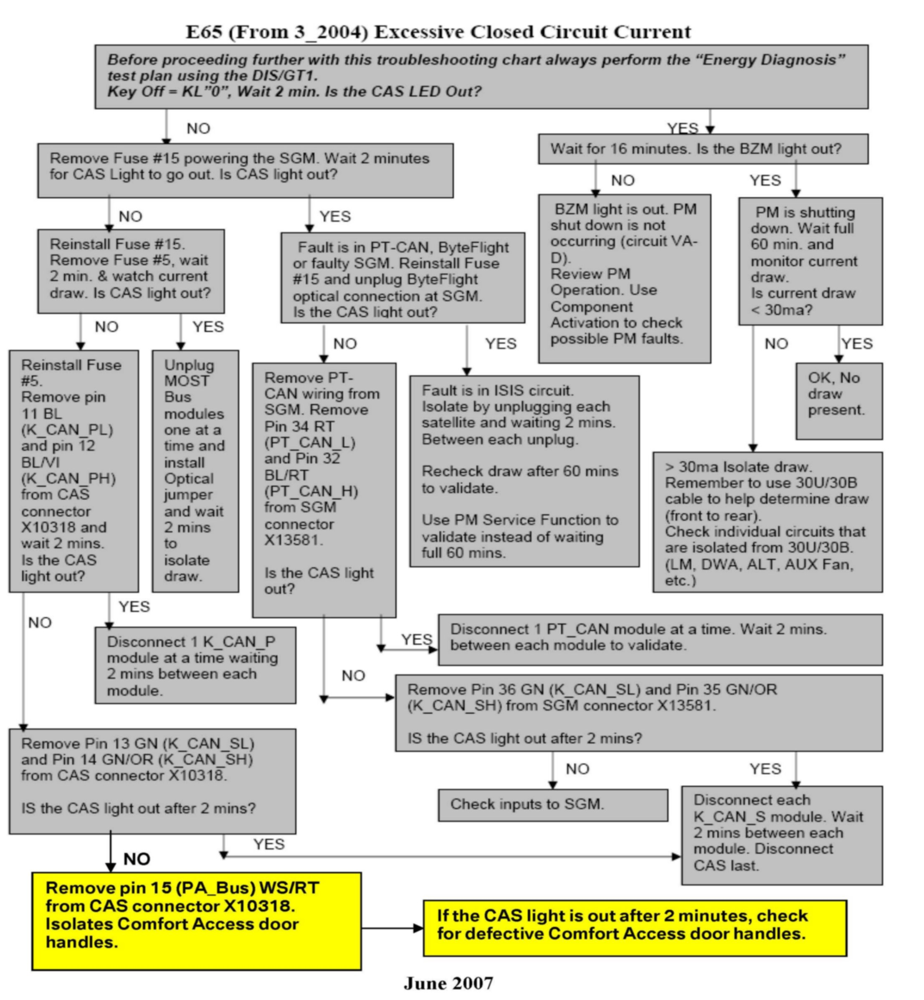
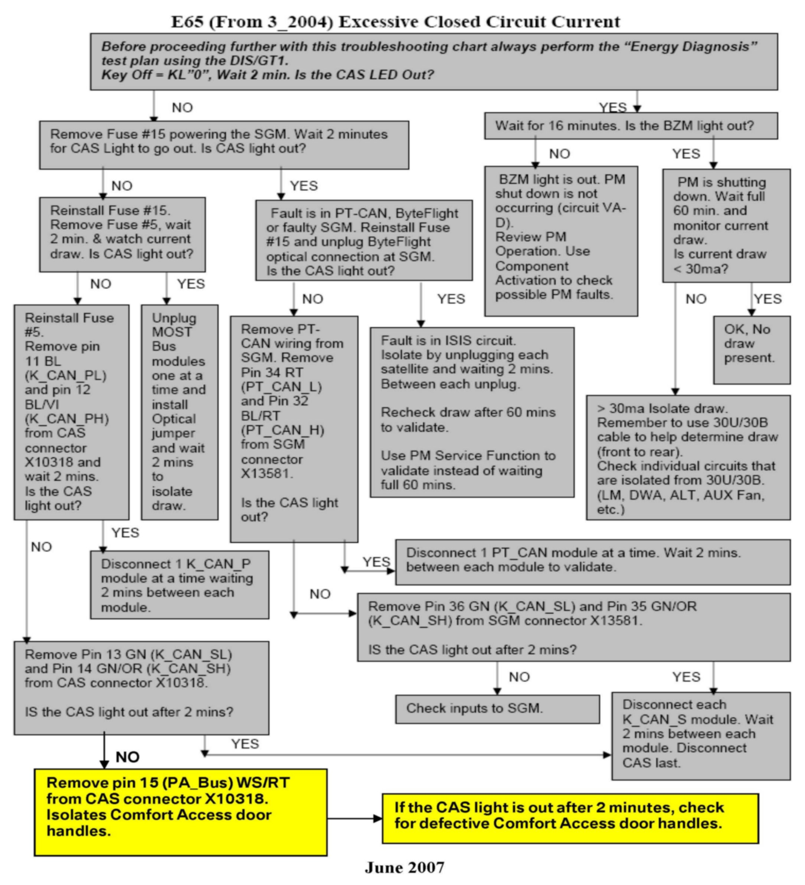

Operation CHARM
: Car repair manuals for everyone.
Home
>>
BMW
>>
2007
>>
X3 3.0si (E83) L6-3.0L (N52K)
>>
Repair and Diagnosis
>>
Power and Ground Distribution
>>
Power Distribution Module
>>
Technical Service Bulletins
>>
All Technical Service Bulletins
>>
Electrical System - Parasitic Draw Measurement
>>
Attachments
>>
Troubleshooting E65 From 3/2004
Troubleshooting E65 From 3/2004

